23. Environmental Exposure for Reinforced Concrete#
Updated: 11.2026
Authors
This chapter was prepared by Dimitri Val, Carmen Andrade and Ton Vrouwenvelder. The JCSS gratefully acknowledges their work.
List of symbols:
\(\begin{array}{ll}b &= \text { CO}_2\text {-binding capacity of concrete}\\ b_{c},\ b_{w} &= \text { exponents of regression}\\ b_{T} &= \text { regression parameter of the temperature function}\\ c &= \text { concrete cover}\\ d_{h} &= \text { horizontal distance from the roadside}\\ d_{v} &= \text { vertical distance above the roadside}\\ k &= \text { a factor reflecting a number of aspects}\\ k_{e} &= \text { environmental function which accounts for the moisture conditions}\\ k_{c} &= \text { execution transfer parameter}\\ k_{t} &= \text { regression parameter}\\ k_{C,binder} &= \text { parameter accounting for the type of binder}\\ k_{C,w/c} &= \text { parameter accounting for the water-cement ratio of the concrete}\\ k_{C,Cl} &= \text { parameter accounting for the chloride concentration of sea water}\\ k_{C,ec} &= \text { parameter accounting for the exposure class}\\ k_{T} &= \text { temperature parameter which can be calculated from Arrhenius equation}\\ m &= \text { age factor}\\ p_{sr} &= \text { parameter representing the probability of driving rain}\\ t_{p} &= \text { propagation period}\\ x_{c}(t) &= \text { depth of the carbonation front (carbonation depth) at time } t\\ C_{CO_2} &= \text { concentration of CO}_2\\ C_{CO_2,s} &= \text { concentration of CO}_2 \text { in the surrounding air}\\ C_{crit} &= \text { critical chloride content to achieve depassivation of the reinforcement}\\ C &= \text { concentration of chloride ions}\\ D &= \text { chloride diffusion coefficient}\\ F_{Cl} &= \text { chloride corrosion rate factor}\\ F_{rust} &= \text { galvanic effect factor}\\ F_{O2} &= \text { oxygen availability factor}\\ F_{RH,T} &= \text { climatic factor}\\ I_{corr} &= \text { instantaneous corrosion current}\\ J_{CO_2} &= \text { flux of CO}_2\\ K_{corr} &= \text { a constant}\\ P_{corr} &= \text { corrosion penetration}\\ R^{-1}_{NAC,0} &= \text { inverse carbonation resistance of concrete in natural conditions}\\ R^{-1}_{ACC,0} &= \text { inverse effective carbonation resistance of concrete}\\ RH_{real} &= \text { relative air humidity}\\ RH_{ref} &= \text { reference relative humidity at test conditions}\\ ToW &= \text { the relative time of wetness}\\ V_{corr} &= \text { corrosion rate}\\ W(t) &= \text { weather function}\\ \alpha &= \text { pitting factor; FORM sensitivity factor}\\ \beta &= \text { reliability index}\\ \Delta x &= \text { depth of the convection zone}\\ \varepsilon_{t} &= \text { error term}\\ \phi &= \text { bar diameter}\\ \rho &= \text { resistivity}\end{array}\)
23.1. Introduction#
During its life a structure is subject to various environmental influences (e.g., moisture, temperature, chemical substances, biological processes, etc.) which, over time, may cause deterioration of the structure material(s). Deterioration usually influences both resistance and appearance of a structure, which means that safety and serviceability of the structure may be seriously compromised.
In the case of deterioration, the basic formula of the probability of failure within a certain period of time \(t_s\) may be written as:
where the integration domain is given by \(\min g[\mathbf{X},t] < 0\) for \(t\) in \((0,t_s)\).
\(\mathbf{X}\) is the vector of the basic random variables, which now includes in addition to mechanical load and resistance parameters also environmental parameters like chloride concentration, diffusion coefficients, humidity etc. The limit state function (LSF) \(g(.)\) includes the effects of deterioration on the resistance properties like strength and geometry. In many cases, \(P_F\) may be written as:
\(R_k\) = mechanical resistance at the end of the time period \(k\), as a result of deterioration of the initial resistance.
\(S_k\) = the maximum mechanical load within the time period \(k\).
The classical limit states are still SLS (appearance) and ULS (collapse). However, for convenience, to deal with different aspects of deterioration additional Condition Limit States are introduced, like the onset of corrosion or the initiation of deterioration (defined as a state corresponding to the initiation of noticeable deterioration of a structural component as described in ISO 2394 [23.1] and ISO 13823 [23.2]). These condition/deterioration limit states enable to refine/simplify the analysis of a deterioration process by considering various well-defined and controllable deterioration-related states, which are not associated with direct negative consequences. If done so, care should be taken to be on the conservative side, i.e., verify that the considered condition limit states do occur before the classical limit states.
Modelling a deterioration process involves significant uncertainties associated with environmental conditions, material properties, limitations of predictive models, and inadequacy of material testing, detection, and inspection methods. This section of the JCSS Model Code presents the state of the art on the models needed for the reliability analysis of structures subject to a number of relevant deterioration processes.
23.1.1. Deterioration processes and modelling#
A number of models relating the deterioration processes in reinforced concrete elements with time are currently available in the literature, among which the most mature at present are the ones on corrosion of reinforcing steel due to carbonation and chloride penetration. However, it has to be emphasised that these models have not been validated for longer than 30 years and the validation cases are still very scarce. Thus, the models, including values of their input parameters, presented further in this document have to be treated with caution and considered as a first step in developing more accurate ones in the future. The models in this document are mainly in line with the fib Model Code 2010 (MC2010) [23.3]; however, in Annexes some other important models may also be presented for the sake of completeness. The latter may be used in addition to the models in the main part of the document in order to improve the confidence in obtained results. Furthermore, it is worth to note that the fib Model Code 2020 (MC2020) is currently under preparation; compared to MC2010 it includes models on corrosion propagation. Further relevant information on MC2020 can be found in Visser [23.4].
With respect to other deterioration processes in concrete (freeze-thaw, alkali-aggregate reaction, sulphate attack, etc.), their models are not in MC2010 and not planned to be included in MC2020 due to their insufficient maturity and, as a result of that, a lack of general consensus about their accuracy and validity. Currently, the present document also covers only deterioration associated with corrosion of reinforcing steel.
23.1.2. The main stages of the deterioration process#
Under normal conditions concrete protects embedded reinforcing steel against corrosion. These protective properties of concrete are attributed to a passive oxide film which forms on the surface of steel in a highly alkaline environment provided by the concrete pore solution. However, environmental actions such as carbonation or penetration of chloride ions disrupt the protective properties of concrete and may lead, over time, to corrosion of reinforcing steel. The stage of the deterioration process between the first exposure of a RC structure to the environmental actions and the beginning of corrosion is called the initiation period.
After corrosion starts, there is the so-called propagation period. Its effects on a RC structure usually include cracking and potential delamination of the concrete cover, reduction and eventually loss of bond between concrete and corroding reinforcement, and reduction of the cross-sectional area of reinforcing steel. Hence, corrosion affects both load bearing capacity and serviceability of RC structures. The consequences of corrosion for RC structures are summarised in Fig. 23.1 [23.5].

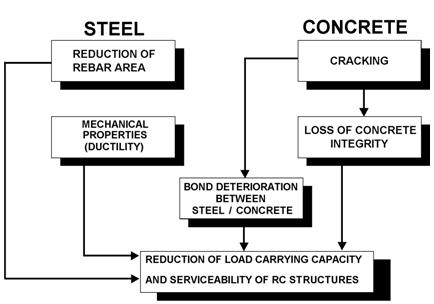
Fig. 23.1 Consequences of corrosion that affect the performance of RC structures and need to be considered in the verification of SLS and ULS [23.5], [23.6].#
The two main stages of the structural deterioration process associated with corrosion of reinforcing steel are schematically shown in Fig. 23.2. It should be noted that, in principle, a structure can deteriorate during the initiation period due to other reasons than corrosion. However, since this deterioration is not caused by the penetration of chloride ions or carbonation it is not shown in Fig. 23.2 [23.7].

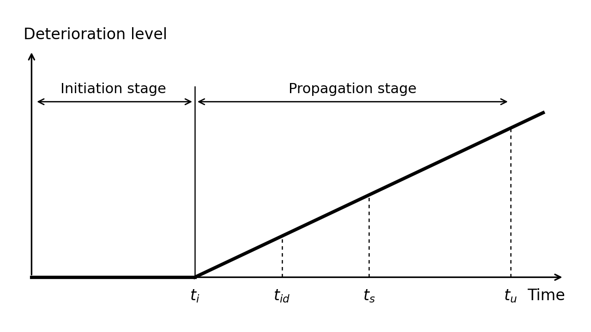
Fig. 23.2 Schematic representation of the development of corrosion-induced deterioration in RC structures. Notation: \(t_i\) = the time of corrosion onset; \(t_{id}\) = the time of the initiation of deterioration, e.g., hairline (less than 0.05 mm wide) cracks on the concrete surface; \(t_s\) = the time of SLS failure due to corrosion-induced damage, e.g., corrosion-induced crack width exceeds a serviceability limit; \(t_u\) = the time of ULS failure due to corrosion-induced damage.#
The two main aspects should be taken into account regarding the propagation stage:
Corrosion morphology, i.e., whether the corrosion is more or less homogeneous or localised (see Fig. 23.3), in particular, because the localised corrosion can lead to the stress concentration phenomenon and negatively affect the steel ductility.
Corrosion rate, i.e., the rate of the loss of the reinforcing steel cross-section over time, which directly controls the rate of structural deterioration during the propagation stage (see Fig. 23.1).
With respect to the corrosion morphology, the attack can be more or less homogeneous over the surface (or its major part) of a reinforcing bar. In this case, a uniform loss of the cross-sectional area of the bar over its perimeter is very often assumed, which will be further referred to as uniform corrosion (see Fig. 23.3(a)). However, in general, corrosion initially starts in the part of the reinforcing bar closest to the concrete surface so that the loss of the bar cross-sectional area is not uniform over its perimeter (see Fig. 23.3(b)). This will be further referred to as homogeneous corrosion. When corrosion concentrates over a small part of the bar surface area it will be referred to a localised (or pitting) corrosion (see Fig. 23.3(c)).

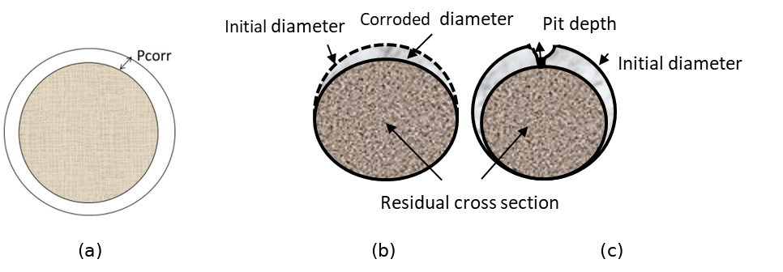
Fig. 23.3 Uniform, homogeneous and localised corrosion.#
Regarding to the corrosion rate, it evolves with the climatic/environmental conditions and with the continuous generation of iron oxides, which modifies the steel concrete interface. The accumulation of the oxides around the corroding reinforcing bar reduces the access of oxygen to the bar surface that may slow down the corrosion process. Cracks in the concrete cover formed due the expansive character of the iron oxides may lead to an acceleration of the corrosion (if the structure is in continuous contact with water) or to slowing it down (if the structure is in air contact since the cracked zones dry quicker than non-cracked ones). Accordingly, there are three possibilities – the corrosion rate (A) remains more or less constant over time; (B) decreases; and (C) increases, especially after the formation of corrosion-induced cracks in the concrete cover (see Fig. 23.4). In general, in the cases (B) and (C) the relationship between the corrosion rate and the time is non-linear but often can be very well represented by bi-linear functions [23.8].

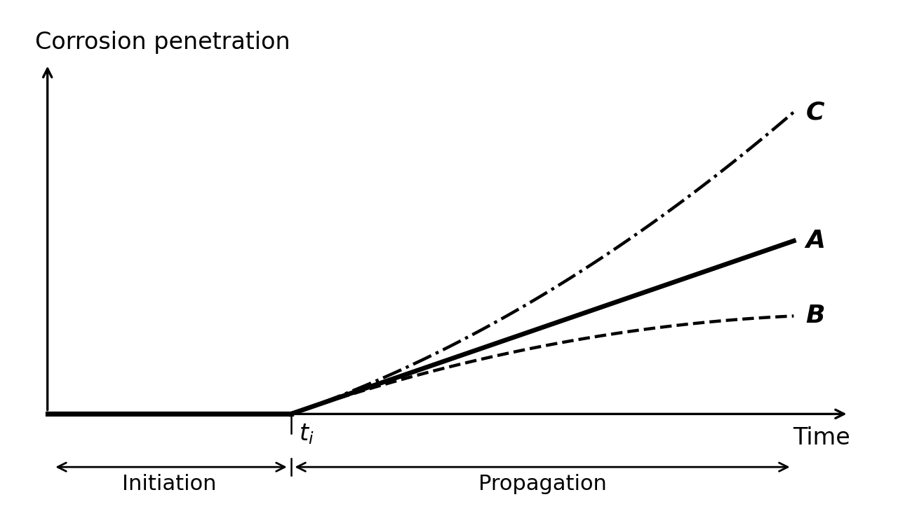
Fig. 23.4 Possible trends of the corrosion rate over time.#
A particular case of steel corrosion in concrete is the stress corrosion cracking (SCC), which may develop in prestressed concrete members. The process starts by the nucleation of microcracks on the surface of the prestressing steel that may take a long time. One of these cracks may progress to a certain critical depth, from which the crack growth velocity is very high and the wire breaks in a brittle manner in a relatively short time. The mechanism of nucleation and, mainly, of progression of SCC is still not well understood. The structural failure may be either brittle or not depending on the reinforcing details, because the brittle failure of a prestressing tendon may not produce the brittle failure of the whole element.
23.2. Corrosion initiation#
23.2.1. Carbonation induced corrosion#
Carbonation is produced due to the ingress of the carbon dioxide gas of the air through the concrete pore network. It is a process involving two mechanisms – diffusion of carbon dioxide, CO\(_2\), from the atmosphere into concrete and its reaction with the alkaline cement hydration products. The reaction leads to reduction of the alkalinity of the concrete pore solution from pH about 12 to below 9, which destroys the thin passive oxide layer on the surface of steel reinforcement and makes the steel susceptible to corrosion.
In the case of carbonation, the critical value is reached when the depth of the carbonation front is larger than the cover depth. Thus, the LSF for time \(t\) may be defined as (MC2010):
\(c\) is the thickness of the concrete cover,
\(x_c(t)\) is the carbonation depth at the time \(t\),
\(t\) is the time period under consideration,
\(\mathbf{X}\) is the set of relevant (random) parameters.
The value of \(x_c\) depends on the diffusion process as described in the next section.
Note that using (23.4) the probability of depassivation can be calculated for any point in time. Taking \(t = t_d\) (where \(t_d\) is the design working life) the probability of failure, i.e., \(P[g(\mathbf{X},t_d)<0]\), for this limit state over the design period can be found. Hence, the alternative formulation of the LSF in the time domain is:
where \(t_i\) is the time of corrosion initiation due to carbonation, which can be found from (23.4) \(g(\mathbf{X},t_i) = 0\).
23.2.1.1. Carbonation ingress model#
The diffusion of CO\(_2\) into concrete is usually described by Fick’s 1\(^{st}\) law of diffusion, which for one-dimensional diffusion is expressed as
where \(J_{CO_2}\) is the flux of CO\(_2\), \(C_{CO_2}\) the concentration of CO\(_2\), and \(D_{CO_2}\) the diffusion coefficient of CO\(_2\) in concrete. Considering that \(J_{CO_2} = (1/A) \times dQ_{CO_2}/dt\), (23.6) can be written as
where \(Q_{CO_2}\) is the mass of diffusing CO\(_2\), \(A\) the surface area, \(\Delta C_{CO_2}\) the difference in the CO\(_2\) concentration in the atmosphere and at the carbonation front, and \(x\) the distance from the concrete surface to the carbonation front.
CO\(_2\) that diffuses into concrete reacts with the alkaline cement hydration products. This reaction is called carbonation as is the responsible of the pH lowering and it may simply be described by the reaction between Ca(OH)\(_2\) and CO\(_2\) (e.g., Taylor [23.9])
It should be noted that (23.8) represents the final result of the reaction between CO\(_2\) and Ca(OH)\(_2\), which in reality involves a number of intermediate reactions not shown here for the sake of simplicity (alkali hydroxides carbonates first and later it does the hydrated calcium silicate). As a result of the reaction, practically insoluble CaCO\(_3\) and water are formed. The reaction of carbonation removes free CO\(_2\) from the mass balance that can be described by the following equation
where \(b\) is the CO\(_2\)-binding capacity of concrete, which depends mainly on the composition of the concrete.
If to assume that the reaction of carbonation, (23.8), occurs instantaneously withdrawing CO\(_2\) from the concrete pores and preventing it from diffusing further, the mass balance equation at the carbonation front can then be formulated using (23.7) and (23.8)
The solution of this equation for \(x_c(0) = 0\) as proposed by Tuutti [23.7] and Schiessl [23.10] is:
where \(x_c\) is the depth of the carbonation front at time \(t\).
In this document, the model presented is the one used in DuraCrete [23.6] and in slightly modified form in LIFECON [23.11], fib [23.12] and MC2010. According to this model the depth of carbonation in [m] at time \(t\) [s] is evaluated as (fib [23.12])
where \(k_e\) is the environmental function which accounts for the moisture conditions, \(k_c\) the execution transfer parameter, \(R^{-1}_{NAC,0}\) the inverse carbonation resistance of concrete determined in natural conditions in [(m\(^2\)/s)/(kg/m\(^3\))], \(C_{CO_2,s}\) the concentration of CO\(_2\) in the surrounding air in [kg/m\(^3\)], and \(W(t)\) the weather function.
For \(k_e\), \(k_c\), \(R^{-1}_{NAC,0}\) and \(W(t)\) the weather function more detailed models exists:
The value of \(R^{-1}_{NAC,0}\) can be related to the result of accelerated tests using:
Further:
where the weather exponent \(w\) which may be expressed as:
In the above equations, \(RH_{real}\) is the relative air humidity obtained using data from the nearest weather station, \(RH_{ref}\) the reference relative humidity at test conditions, \(RH_{ref}\) = 0.65, \(t_c\) the period of curing in [days], \(b_c\) the exponent of regression, \(D_{CO_2}\) the diffusion coefficient of CO\(_2\) in concrete, \(b\) the CO\(_2\)-binding capacity of concrete, \(R^{-1}_{ACC,0}\) the inverse effective carbonation resistance of concrete determined by laboratory testing, \(k_t\) a regression parameter, \(\varepsilon_t\) an error term, \(ToW\) the relative time of wetness (\(ToW\) represents the relative time that there is more rain than 2.5 mm per day), \(p_{sr}\) the parameter representing the probability of driving rain, and \(b_w\) the exponent of regression.
23.2.1.2. Random variables for carbonation ingress#
Table 23.1 gives an overview of the various probabilistic models, where \(V\) denotes the coefficient of variation.
\(X\) |
designation |
unit |
mean |
scatter |
dist. |
|---|---|---|---|---|---|
\(C_{CO_2,s}\) |
Equivalent CO\(_2\) concentration |
kg/m\(^3\) |
8·10\(^{-4}\) Note (3) |
\(V\)=0.12 |
N |
\(R^{-1}_{NAC,0}\) |
Inverse resistance against carbonation |
(m\(^2\)/s)/(kg/m\(^3\)) |
Note (4) |
Note (4) |
N |
\(RH\) |
Equivalent \(RH\) at concrete surface |
- |
Note (1) |
- |
|
\(RH_{ref}\) |
Reference value |
- |
0.65 |
- |
|
\(b_c\) |
Empirical constant |
- |
-0.567 |
\(V\)=0.04 |
N |
\(p_{sr}\) |
Prob. of rain driving wind direction |
- |
Note (1,2) |
- |
|
\(k_t\) |
Regression coefficient in resistance |
- |
1.25 |
\(V\)=0.28 |
N |
\(\varepsilon_t\) |
Error term in resistance |
(m\(^2\)/s)/(kg/m\(^3\)) |
10\(^{-11}\) |
\(V\)=0.15 |
N |
\(ToW\) |
Relative time of wetting |
- |
Note (1) |
- |
|
\(b_w\) |
Coefficient weather function |
- |
0.446 |
\(V\)=0.36 |
N |
\(t_o\) |
Reference time weather function |
s |
2.4·10\(^6\) |
- |
Note (1): The statistics for \(RH\), \(p_{sr}\) and \(ToW\) should be derived from local weather stations. Example values for the Netherlands are: \(RH\) = 0.85, \(p_{sr}\) = 0.25 and \(ToW\) = 0.05.
Note (2): For horizontal elements \(p_{sr}\) = 1 and for interior elements \(p_{sr}\) = 0.
Note (3): The ambient CO\(_2\) concentration increases over time due to climate change and its mean value should be updated to account for this effect.
Note (4): \(R^{-1}_{ACC,0}\) in (23.16) is determined by the ACC test, which is carried out using concrete specimens at the age of 28 days (7 day curing in tap water at \(T\)=+20°C and then 21 day storage at \(T\)=+20°C and \(RH\)=0.65). As described in DuraCrete [23.13] or fib [23.12] the specimens are then stored for 28 days in a carbonation chamber at \(T\)=+20°C, \(RH\)=0.65, and the CO\(_2\) concentration of 2.0 vol.%. Present European Standard specifies a slightly different procedure (BS EN 12390-12:2020). Any local standard may be used, provided that the method is similar to the one described above.
\(R^{-1}_{ACC,0}\) can be described by a normal distribution with mean value estimated using the ACC test result as:
where \(x_c\) is the carbonation depth in [m] measured in the ACC test and \(\tau\) = 420 (s/kg/m\(^3\))\(^{0.5}\) the “time constant”. If no test data is available, data from Table 23.2 can be used for orientation purposes (fib [23.12]).
Since the relative error in determining \(x_c\) decreases with an increase in \(x_c\) and the mean value of \(R^{-1}_{ACC,0}\) is directly proportional to \(x_c\), the coefficient of variation of \(R^{-1}_{ACC,0}\) depends on its mean value and can be found as:
Cement type |
w/c\(_{eqv}\) \(^1\) = 0.35 |
0.40 |
0.45 |
0.50 |
0.55 |
0.60 |
|---|---|---|---|---|---|---|
CEM I 42.5 R |
n.d.\(^2\) |
3.1 |
5.2 |
6.8 |
9.8 |
13.4 |
CEM I 42.5 R + FA (k=0.5) |
n.d.\(^2\) |
0.3 |
1.9 |
2.4 |
6.5 |
8.3 |
CEM I 42.5 R + SF (k=2.0) |
3.5 |
5.5 |
n.d.\(^2\) |
n.d.\(^2\) |
16.5 |
n.d.\(^2\) |
CEM III/B 42.5 |
n.d.\(^2\) |
8.3 |
16.9 |
26.6 |
44.3 |
80.0 |
\(^1\) equivalent water-cement ratio, considering fly ash (FA) or silica fume (SF) with the respective efficiency factors (k-values). The considered contents were: FA – 22% of weight of cement (22 wt% cement), SF – 5 wt% cement.
\(^2\) n.d. – data on \(R^{-1}_{ACC,0}\) for these cement types is not available.
Note (5): The thickness of the concrete cover \(c\) can be described by a lognormal distribution with mean equal to its nominal value and standard deviation of: 8 – 10 mm – without particular execution requirements, and 6 mm – with additional execution requirements.
23.2.1.3. Simplified model#
The above model (23.12) is often written in simplified form in the following way:
where \(k\) = a factor reflecting aspects like the execution, basic resistance of the chosen concrete mix (like w/c-ratio, cement type, additions) under reference conditions and the influence of the basic environmental conditions (like mean relative humidity and the CO\(_2\) concentration) against ingress of carbonation. \(W(t)\) is estimated using (23.17).
This formulation may be convenient when assessing existing structures on the basis of site measurements. \(k\) will then be represented by its average value over the life of the structure until the time of the inspection. The standard deviation of \(k\) might also be found from the measurements.
23.2.2. Chloride induced corrosion#
The penetration of chloride ions into concrete is a complex process mainly involving two transport mechanisms – ion diffusion and absorption. It depends on many factors including the properties of concrete (i.e., its composition, porosity and microstructure), the degree of concrete pore saturation, and the exposure conditions at the concrete surface sometimes referred to as “microclimate” (i.e., the surface chloride content, temperature, and humidity). A number of these factors are inter-, time-, spatial-, and temperature-dependent. Since only free chloride ions move inwards, their penetration depends on the binding capacity of concrete and on the achieved free chloride concentration itself, which is obviously time dependent as well.
The limit state function (LSF) is expressed as the difference between the critical (or threshold) chloride concentration and the chloride concentration at the rebar surface level at time \(t\) of the design working life
where
\(C_{crit}\) is the critical chloride content to achieve depassivation of the reinforcement,
\(C(c,t)\) is the chloride content at the depth \(c\) and time \(t\),
\(c\) is the concrete cover,
\(t\) is the time period under consideration.
The limit state may also be formulated in the time domain like in (23.5).
23.2.2.1. Chloride ingress model#
The chloride ingress is treated as a pure diffusion process described by Fick’s 2\(^{nd}\) law of diffusion
where \(C\) is the total concentration of chloride ions at distance \(x\) from the surface after the time \(t\) of exposure to chlorides and \(D\) the chloride diffusion coefficient. To complete the problem formulation boundary and initial conditions need to be defined
where \(\Delta x\) is the depth of the convection zone (i.e., the surface concrete layer in which chloride penetration is mainly governed by capillary absorption (convection) and Fick’s 2\(^{nd}\) law is inapplicable), \(C_{s,\Delta x}(t)\) the chloride concentration at depth \(\Delta x\), and \(C_i(x)\) the initial chloride concentration.
Generally, both the chloride diffusion coefficient and the surface chloride concentration may change with time. In the present model the time dependency of \(C_s\) is not taken into account. The time-dependence of the chloride diffusion coefficient is described in the form suggested initially by Maage et al. [23.14] and later modified to make it mathematically correct.
where \(D_a\) denotes the achieved (or apparent) diffusion coefficient, \(D_{a,ref}\) its value at the reference time \(t_{ref}\), and \(m\) the age factor. It is important to stress that according to its definition the achieved diffusion coefficient remains constant within a time period \(t\) and changes only when the duration of the time period changes. Therefore, \(D_a\) does not represent a physical property of concrete at a particular moment in time, but rather characterises an average diffusivity over the time period \(t\).
Assuming that the surface chloride concentration remains constant with time and the time-dependence of the diffusion is described by (23.25), the solution of (23.23) can be expressed as
where \(D_a(t)\) the apparent diffusion coefficient, which apart from time depends also on temperature (see below) and erfc(.) the error function complement. To find \(C(c,t)\) in (23.22) take \(x = c\) in (23.26).
It should be noted that in accordance with the adopted definition of the diffusion coefficient, (23.25), the solution, (23.26), is valid only at a single point in time, for which \(D_a\) is estimated. Strictly from a mathematical point of view, this cannot be correct. However, if we assume that (23.25) describes an instantaneous value of the diffusion coefficient, i.e., the diffusion coefficient changes constantly within a time period \(t\), then the solution of (23.23) will differ from (23.26) only by the multiplier \(1/(1-m)\) appearing under the square root. This means that \(D_{a,ref}\) in (23.25) merely replaces a reference value for the instantaneous diffusion coefficient times \(1/(1-m)\). \(D_{a,ref}\) can be estimated as
where \(D_{ref,0}\) is the reference value determined in a chloride test at a reference short time (28 days for instance). \(k_T\) is the temperature parameter which can be calculated from Arrhenius equation
where \(b_T\) is the regression parameter, \(T_{ref}\) the reference temperature (=293 K), and \(T\) the ambient temperature.
23.2.2.2. Random variables for chloride ingress model#
Table 23.3 gives an overview of the various probabilistic models.
\(X\) |
Designation |
unit |
mean |
scatter |
|---|---|---|---|---|
\(D_{ref}\) |
Chloride diffusion coefficient |
10\(^{-12}\) (m\(^2\)/s) |
Note (1) |
|
\(m\) |
Age factor |
- |
Note (2) |
|
\(b_T\) |
Regression parameter (in K) |
K |
4800 (Note (3)) |
\(V\)=0.146 |
\(\Delta x\) |
Depth of absorption zone |
mm |
9 (Note (4)) |
\(V\)=0.6 |
\(C_{s,\Delta x}\) |
Chloride concentration at depth \(\Delta x\) |
% |
Note (5) |
|
\(C_{crit}\) |
Threshold chloride concentration |
See section on critical chloride content |
Note (1): The chloride diffusion coefficient \(D_{ref,0}\) represents the rate of chloride penetration. As mentioned above a mean value of \(D_{ref,0}\) should be determined by a test. If no test data is available, the following data (Table 23.4) can be used for orientation purposes (fib [23.12]). The table presents data obtained by the Rapid Chloride Migration (RCM) test carried out at 28 days, i.e. \(t_{ref}\) = 28 days, and therefore denoted as \(D_{RCM,0}\). \(D_{RCM,0}\) can be treated as normally distributed random variable with \(V\)=0.2.
Cement type |
w/c\(_{eqv}\) \(^1\) = 0.35 |
0.40 |
0.45 |
0.50 |
0.55 |
0.60 |
|---|---|---|---|---|---|---|
CEM I 42.5 R |
n.d.\(^2\) |
8.9 |
10.0 |
15.8 |
19.7 |
25.0 |
CEM I 42.5 R + FA (k=0.5) |
n.d.\(^2\) |
5.6 |
6.9 |
9.0 |
10.9 |
14.9 |
CEM I 42.5 R + SF (k=2.0) |
4.4 |
4.8 |
n.d.\(^2\) |
n.d.\(^2\) |
5.3 |
n.d.\(^2\) |
CEM III/B 42.5 |
n.d.\(^2\) |
1.4 |
1.9 |
2.8 |
3.0 |
3.4 |
\(^1\) equivalent water-cement ratio, considering fly ash (FA) or silica fume (SF) with the respective efficiency factors (k-values). The considered contents were: FA – 22% of weight of cement (22 wt% cement), SF – 5 wt% cement.
\(^2\) n.d. – data on \(D_{ref,0}\) for these cement types are not available.
Note (2): The age factor \(m\) depends on the type of cement and exposure conditions. It can be presented by a Beta distribution on the interval [0, 1]. It can be tested estimated by extending the diffusion test to longer ages of contact with the salt solution (it can be to 6 or 12 months) and then calculating the aging factor from (23.25) or (23.27).
Pure Portland cements may present aging factors from very low values near 0.1 to around 0.3 depending on their calcium aluminate content. The concretes with mineral additions exhibit much higher values due to the slower reaction of the additions with the Ca(OH)\(_2\). The range of values can be from 0.3 to 0.8.
The mean and COV of \(m\) for RC structures in the splash, tidal, and submerge zones can be adopted in accordance with Table 23.5. Note that the values of \(m\) in Table 23.5 were derived by fitting (23.25), with \(D_{a,ref}\) replaced by \(D_{RCM,0}\) obtained from the RCM test, to a number of values of \(D_a\) estimated at different points in time. By this reason the multiplier \(1/(1-m)\) should be omitted in (23.27) when \(D_{a,ref}\) is calculated using the values of \(D_{RCM,0}\) from Table 23.4.
Type of cement |
Mean |
COV |
|---|---|---|
Ordinary Portland cement (OPC) |
0.30 |
0.40 |
OPC with fly ash (FA) |
0.60 |
0.25 |
Blast furnace slag cement (GBFS) |
0.45 |
0.44 |
Note (3): The regression parameter \(b_T\) can be described by a normal distribution.
Note (4): In DuraCrete [23.13], it has been proposed that for the splash zone, \(\Delta x\) can be described by a Beta distribution on [0, 50] mm with mean of 9 mm and COV=0.60 for 50 years.
For the submerged zone and the atmospheric zone (spray conditions, e.g., 1.5 m above the road surface), \(\Delta x\) can be treated as a deterministic parameter equal to 0.
For the tidal zone, statistical quantification still needs to be conducted.
Note (5): When the source of chlorides is de-icing salt, \(C_{s,\Delta x}\) is described in fib Bulletin 34 [23.12] by a normal distribution with mean given by the following equation
where \(d_h\) is the horizontal distance from the roadside [cm], \(d_v\) the height (vertical distance) above the road surface [cm], and COV=0.75. (23.29) is based on data from 5–40-year-old concrete structures made of OPC (CEM I) concrete with 0.45≤w/c≤0.60 and located in urban and rural areas of Germany.
When the source of chlorides is sea water, the ambient chloride concentration depends on the chloride concentration of sea water, distance/height from/above the sea (e.g., splash zone, on the coast, etc.) and several other factors (e.g., sheltered or unsheltered surface, dominant wind direction, etc.). Thus, for realistic predictions of the probability of corrosion initiation in such cases the use of local data on \(C_{s,\Delta x}\) is highly desirable.
In the absence of such data, the mean value of \(C_{s,\Delta x}\) can be estimated as
where \(C_{s,0}\)=2.5% (wt.-%/concrete) is the average chloride concentration at depth \(\Delta x\) for OPC (CEM I) concrete in the tidal/splash zone (XS3 exposure class) exposed to sea water with typical chloride concentration (i.e., about 19.4 g/l), \(k_{C,binder}\) the parameter accounting for the type of binder, \(k_{C,w/c}\) the parameter accounting for the water-cement ratio of the concrete, \(k_{C,Cl}\) the parameter accounting for the chloride concentration of sea water and \(k_{C,ec}\) the parameter accounting for the exposure class.
The following values of the parameters are suggested:
\(C_{s,\Delta x}\) can be modelled as a truncated at 0 normal random variable with coefficient of variation (COV) depending on the exposure class: 0.30 for XS1, 0.15 for XS2 and 0.25 for XS3.
Comments: most of relevant data are available for OPC concrete with w/c around 0.40 in splash/tidal zone (XS3 environment) and sea water with the typical chloride concentration (i.e., 19.4 g/l). According to these data from various independent sources, the average value of the surface chloride concentration is about 2.5% wt.-%/concrete [23.15], [23.16], [23.17]. Based on that the value of \(C_{s,0}\) has been assigned.
There is some evidence that the surface chloride concentration is slightly higher for concretes with FA, SF and GGBS (e.g., DuraCrete [23.18], Pack et al. [23.17]). In particular, DuraCrete BE95-1347/R9 [23.18] suggests a linear relationship between the surface chloride concentration, \(C_{s,\Delta x}\), and the water-cement ratio, w/c: \(C_{s,\Delta x} = A(w/c)\) and provides values of \(A\) for different concretes in different environments (see Table 8.5 in DuraCrete BE95-1347/R9). However, these values look inconsistent and many of them are not supported by data reported in other publications. Based on data from various publications, including DuraCrete BE95-1347/R9, the above values of \(k_{C,binder}\) are tentatively suggested.
\(k_{C,w/c}\) and \(k_{C,Cl}\) have been adopted from Lindvall [23.19].
The above values of \(k_{C,ec}\) are mainly based on data from DuraCrete [23.6] and McCarter et al. [23.16].
Available data on the coefficient of variation of \(C_{s,\Delta x}\) are very inconsistent. For example, the data presented in DuraCrete BE95-1347/R9 suggests that the COV is below 0.20 for different concretes and different environments. Statistical analysis of the data presented in Pack et al. [23.17] yielded \(V\)=0.14 for OPC concrete and 0.05 for GGBS concrete (XS3 environment). At the same time, according to the data presented by Polder and de Rooij [23.20] for OPC and GGBS concretes in XS3 environments values of the COV can be very high (for several structures between 0.3 and 0.4, and in one case even 0.71). It is expected that for permanently submerged structures environmental conditions (XS2) are more uniform so that the COV should be the lowest among the three exposure classes. The conditions are much more variable in tidal/splash zones (XS3) and even more variable in XS1 environments. Taking all these into account and with the intent not to be over conservative, the above values of the COV are suggested.
23.2.3. Depassivation limit state#
In carbonated concrete, depassivation is identified with the arrival of the carbonation front to the external surface of the bars. The LSF is (23.4).
In the case of chlorides, the depassivation is associated to a critical chloride concentration at the bar surface. The LSF is (23.22).
23.2.3.1. Critical chloride content#
The threshold or critical chloride concentration in concrete, \(C_{crit}\), in many standards is given as 0.4% by weight of cement. However, this threshold is not a fixed quantity as it is influenced by several factors. Only a few statistical distributions of \(C_{crit}\) are available in the literature. Hausmann [23.21] expressed it as a function of the Cl\(^-\)/OH\(^-\) ratio and by that reason it is difficult to use.
In DuraCrete [23.6], the distribution of \(C_{crit}\) obtained by Breit and Schießl [23.22] in bridges in the UK was used. The distribution is Beta with a mean of 0.6 (by % cement weight) and a standard deviation of 0.15 (\(V\)=0.25).
A broader analysis was made by Markeset [23.23] using data from a field study of bridges in Norway, where cores were drilled from concrete sections of the bridges to determine their chloride contamination and values of the chloride content at the rebar level when corrosion was “incipient”. The values of the chloride content in the cores with incipient corrosion were treated as the chloride threshold concentration. Statistical analysis of the results yielded a log-normal distribution with a mean value of 0.77 and COV of 0.25 (by % cement weight).
Results very similar to those of Markeset [23.23] were obtained by Izquierdo et al. [23.24] using data from a laboratory study made on mortar specimens fabricated with different cement types and submitted to potentiostatic tests, in which chlorides were forced to penetrate into concrete by applying a voltage difference.
For submerged or very wet conditions, the only results were reported by Izquierdo et al. [23.24] by analysing data on chloride thresholds for cathodic potentials higher than -200 mV\(_{SCE}\). According to these results, \(C_{crit}\) can be described by a log-normal distribution with a mean value of 1.53 and a standard deviation of 0.53 (both by % cement weight).
Table 23.6 (from fib Bulletin 112 [23.25]) shows the comparison of the distribution obtained by Breit and Schießl [23.22] with that of Izquierdo et al. [23.24] and Markeset [23.23].
Literature source |
Statistical distribution |
Average value |
Coefficient of variation (%) |
|
|---|---|---|---|---|
Breit et al. 1995 |
Beta |
0.6 |
25.00 |
|
Markeset 2009 |
Log-normal |
0.77 |
32.46 |
|
Izquierdo et al. 2004 |
> -200 mV (atmospheric) |
normal |
0.7 |
28.57 |
< -200 mV (submerged) |
Log-normal |
1.53 |
34.64 |
23.2.3.2. The thickness of the concrete cover#
The thickness of the concrete cover \(c\) can be described by a lognormal distribution with mean equal to its nominal value and standard deviation of: 8 – 10 mm – without particular execution requirements, and 6 mm – with additional execution requirements.
23.3. Corrosion propagation#
23.3.1. Corrosion propagation process#
As described in the section on the depassivation limit state, after depassivation is confirmed by maintaining a high enough corrosion rate, the corrosion process evolves by the formation of iron oxides, named usually “rust” [23.26], [23.7]. These oxides are a mixture of several oxy-hydroxides with different degree of hydration and when generated, their particles are growing in the pore solution, which in consequence, when it is more and more concentrated in salts presents a consistency of a dense liquid or even a soft gel is formed [23.27]. The oxides initially accommodate in the steel/concrete interface to further diffuse through the pore network. At the same time, they produce a pressure in the concrete surrounding the bar due to the volume of the oxides is larger than that of the parent steel, because of the incorporation of oxygen and water to the iron [23.28]. The process develops depending on the availability of water at the rebar surface and is continuously evolving depending also on temperature changes in the environment.
The loss of parent steel by the corrosion process means the decrease in bar mass and geometrically, of the bar diameter [23.29]. This decrease in diameter can be uniform or localized as shown in Fig. 23.3. The total diameter loss (\(\phi_{ini} - \phi_t\)) (initial diameter minus the diameter at time \(t\)) or “corrosion penetration depth”, \(P_{corr}\), is then [23.30]:
The mass loss in a certain time is what is named “corrosion rate”, \(V_{corr}\), and expressed for engineering applications in µm/year. It can be measured by weighing the bar piece before and after the corrosion period, or by measuring the decrease in diameter with a caliper as shown in Fig. 23.5. If the bar is corrugated, the result can be local or has to be averaged by measuring in several sections.

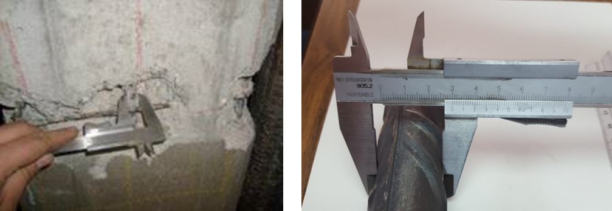
Fig. 23.5 Measurement of corrosion penetration depth by a caliper [23.29].#
The bar mass loss can be also recorded continuously by the Polarization Resistance or “Linear Polarization” method that is an electrochemical technique. The corrosion current \(I_{corr}\) in µA/cm\(^2\) is the ratio between a constant (named \(B\)) whose value is of 26 mV for the concrete reinforcements and the polarization resistance, \(R_p\), in kΩ·cm\(^2\) [23.29].
This value of \(I_{corr}\) is named “instantaneous corrosion current” or simply “corrosion current” and is expressed in µA/cm\(^2\). Fig. 23.6 (left) shows the evolution of the instantaneous \(I_{corr}\) with time of a specimen where chlorides were added in the mixing water.

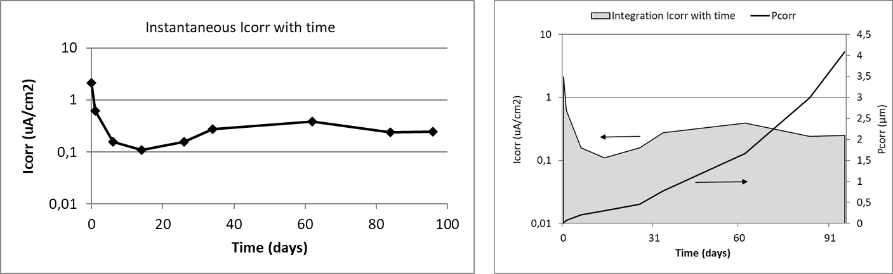
Fig. 23.6 Left: The recording of corrosion current with time in a specimen. Right: The integration of the area \(I_{corr}\)-time gives the total coulombs that through Faraday’s law can be converted into mass loss [23.29].#
The integration with time of this instantaneous corrosion current (Fig. 23.6, right) gives the amount of coulombs (Coulomb = current by time) that through Faraday’s law enables the calculation of the total mass loss on that period. The equivalence for the steel between the corrosion rate (\(V_{corr}\)) and the corrosion current (\(I_{corr}\)) through Faraday’s law is given by (23.33) [23.30]:
with \(V\) in [µm/year] and \(I\) in [µA/cm\(^2\)].
If the plot is made by the integration at each time step, the result is shown in the same Fig. 23.6 (right) where the \(P_{corr}\) (mass loss at each age) is depicted in the axis at the right.
23.3.1.1. Corrosion in prestressed members#
In prestressed or postensioned members, corrosion can develop and progress by the same (electrochemical) mechanism as the previously described, but in addition to it, the reinforcement may suffer a process which aims into sudden brittle failures: the Stress Corrosion Cracking (SCC) [23.31]. This is a set of mechanisms that its development requires the simultaneous presence of a susceptible material (such as high yield strength steels), a corrosive media, and a certain level of mechanical tension.
The process starts from a defect at the bar surface, that can be of mechanical origin or caused by localized corrosion [23.32]. Once the initial crack is nucleated, it may progress to a certain critical depth at which, the stress concentration in its crack bottom may induce the crack to progress until the brittle fracture of the steel. Additionally, the acidification caused by the corrosion generates hydrogen ions that are reduced in the cathodic zones to produce hydrogen atoms that may diffuse inside the steel and generate its embrittlement. This hydrogen inside the metal enhances the effect of external tension, and an unexpected and brittle failure of the wires might occur.
This SCC mechanism will not be treated in the present chapter because at present there is no method to anticipate or predict when the brittle ruptures may occur.
23.3.1.2. Time evolution of the corrosion process (electrochemical)#
The corrosion rate may not be constant because it depends on the:
a) Porous microstructure of the concrete and its evolution with time
b) Its degree of saturation
c) The temperature
d) Availability of oxygen
e) The amount of oxides (rust) generated by the corrosion which may be a barrier for further progress of the corrosion.
These parameters evolve with the cement hydration and may vary following the environmental conditions. This is what happens when the concrete element is submitted to the action of the atmosphere. An example of evolution of the corrosion current \(I_{corr}\) with time is given in Fig. 23.7 (left) [23.33]. It corresponds to a beam contaminated with chlorides exposed outdoors to the weather variations (Madrid-Spain exposure of continental time with around 450 l/m\(^2\) of annual rainfall and around 15 ºC of averaged temperature and 65% of RH) [23.34], [23.35].

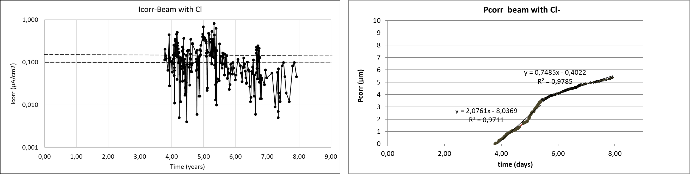
Fig. 23.7 Left: Corrosion current values in the case of a beam with 3% of admixed chlorides exposed outdoors in Madrid weather. Right: Corrosion penetration in the case of a beam with 3% of admixed chlorides exposed outdoors in Madrid weather.#
The starting of the measurements of corrosion was almost 4 years later than the fabrication of the beam, that is, no corrosion measurements were made during this initial period. The evolution from the 4 years indicates dramatic variations of the corrosion current, because of the rain periods and the seasonal changes. The trend however attenuates after around 2 years attributed to: a) the progressive hydration of the cement, or b) the appearance of cracks in the cover that enable longer drying periods in the bar facing the crack and then, with shorter wetness time or c) to the formation of the oxides (rust) that difficult the further progress of the corrosion.
In Fig. 23.7 (right) is shown the corrosion penetration depth (\(P_{corr}\)) of the left plot. This plot, as giving the corrosion degree during the time, enables a better appraisal of the phenomenon. It can be identified that the corrosion current is constant but with two stages (slopes of the curve). One first until around 2 years with a slope (corrosion current) of around 2 µA/cm\(^2\) and a second period with a mean corrosion rate of around 0.736 µA/cm\(^2\).
23.3.1.3. Ranges of instantaneous corrosion rates#
In the laboratory and in the real structures, the corrosion rate measured are of similar level when the concrete is carbonated or contains chlorides or is free of any contamination. Thus, when the steel bar is passive or the corrosion is negligible for life of 100 years, the corrosion rate is below 0.1 µA/cm\(^2\) and the maximum values measured have been of around 100-200 µA/cm\(^2\). In between those values the ranges of corrosion that have ranked are given in Table 23.7 [23.30], [23.5].
Corrosion rate |
µA/cm\(^2\) |
µm/year |
Reinforcing bar condition |
|---|---|---|---|
Negligible |
< 0.1 |
< 1 |
Passive state |
Low |
0.1 – 0.5 |
1 – 5 |
Depassivated in concrete with moderate humidity |
Moderate |
0.5 – 1 |
5 – 10 |
Active corrosion in concrete with medium level humidity |
High |
1 – 10 |
10 – 100 |
Corrosion in wet concrete |
Very high |
> 10 |
> 100 |
Corrosion in wet and cracked concrete |
23.3.2. Corrosion propagation model#
A corrosion propagation model is a mathematical expression of the processes described above. Only the corrosion propagation by electrochemical mechanisms will be here addressed, because for the cases suffering stress corrosion cracking still there is not a model.
Tuutti [23.7] proposed for reinforcement corrosion a model in two stages: corrosion initiation (Fig. 23.4) and corrosion propagation. The (mean) corrosion propagation period was expressed by Andrade et al. ([23.29], [23.30], [23.35]) in the following manner:
where the propagation period (\(t_p\) in years) is equal to the corrosion penetration \(P_{corr}\) (or decrease in diameter, \(\phi_0 - \phi_t\) in µm) divided by the annual mean corrosion rate (\(V_{corr,m}\) in µm/year). This model assumes a constant corrosion rate as indicated by Tuutti [23.7]. The model was incorporated into the Contecvet Manual [23.5], also in the reports of the DuraCrete project [23.36] and in the Annexes of fib Bulletin 34 [23.12]. Recently it has been detailed in Annex A of the fib Bulletin 119 [23.37].
In the case of pitting attack, as the corrosion penetration is locally deeper, a pitting factor \(\alpha\) is introduced in the equation resulting:
where \(\alpha\) is the pitting factor [-] indicating the maximum pit depth [23.38]. In the case of chlorides, the mean value found in the DuraCrete project [23.36] was around of \(\alpha\)=10 times.
A modification of this model has been incorporated into the fib MC2020 [23.39] and the Bulletin 112 [23.25] because as described before, the corrosion rate may show more than one mean constant corrosion rate. That situation is represented in Fig. 23.8. In the figure the corrosion rate (slope of the graph \(P_{corr}\)-time) is represented as always constant (line A), or by a change in the slope at a certain time showing an acceleration (line C) that indicates the case when the corrosion rate increases steadily (for example if the cover cracks and the reinforcement falls in direct contact to saline water) or shows an attenuation of the corrosion in time (line B), typical of when cover cracking occurs outdoors in dry atmosphere where the time of wetness is shorter in the cracked zones than where the bar is fully covered by the concrete (more common in carbonated specimens where the oxides additionally may have a semi-protective character).
Considering these “two consecutive periods” of different corrosion rates (bi-linear progress of the corrosion penetration) the expression (23.34) of the propagation period can be substituted by the following one:
\(P_{corr,1}\) penetration of corrosion attack in period 1 (commonly until cover cracking) [µm]
\(P_{corr,2}\) penetration of corrosion attack in period 2 (for example after cover cracking) [µm]
\(V_{corr,m1}\) mean corrosion rate in period 1 [µm/year]
\(V_{corr,m2}\) mean corrosion rate in period 2 [µm/year]

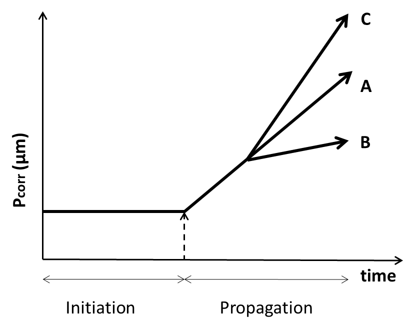
Fig. 23.8 Linear (line A) and two-step (bi-linear) corrosion propagation models (line B with a lowering of the corrosion rate and line C with an increase of it with time).#
In Fig. 23.1 it was indicated that the diameter loss should be further associated to the structural consequences that corrosion induces. This verification of the structural SLS and ULS in corroded elements is out of the scope of the present chapter.
23.3.3. Random variables in the corrosion propagation model#
The variables in the corrosion propagation model (expressions (23.34) and (23.35) or (23.36)) are the corrosion rate \(V_{corr}\) and the pitting factor \(\alpha\).
The values of \(V_{corr}\) can be obtained from:
An expression in function of its constitutive parameters (factors affecting the rate)
Average values in function of the exposure classes obtained from experience
23.3.3.1. Model of the corrosion rate and its uncertainty#
The model proposed in the DuraCrete project [23.36] was of parametric type. At present that model can be updated in the following manner:
where:
\(V_{corr}\) = corrosion rate [µm/year]
\(K_{corr}\) = a constant [(μm/year)·kΩ·cm]
\(\rho\) = resistivity [kΩ·cm]
\(F_{Cl}\) = chloride corrosion rate factor [-]
\(F_{rust}\) = galvanic effect factor [-]
\(F_{O2}\) = oxygen availability factor [-]
\(F_{RH,T}\) = climatic factor [-]
From these constitutive parameters, the only one that has been enough quantified is the resistivity because it is a relatively easy to be measured, in addition to be the most influencing of all of them. The \(F_{Cl}\) is being studied, but not fully formulated yet.
The model is then summarized as:
and
\(V_{pit}\) maximum pit penetration [µm]
\(\alpha\) pitting factor \(P_{max}/P_{corr}\) [-]
In this model of expression (23.38) the variables whose uncertainty is necessary to be calculated are: \(V_{corr}\), \(K_{\rho}\) and \(\alpha\). This characterization was made in the DuraCrete project [23.36] using the values of a database in Geocisa [23.40].
23.3.3.2. Statistical characterization of \(K_{corr}\) and \(\alpha\)#
The results obtained are given in Table 23.8.
\(X\) |
designation |
unit |
mean |
CoV (%) |
Distribution |
|---|---|---|---|---|---|
\(K_{corr}\) |
Constant |
(μm/year)·kΩ·cm |
26 |
159 |
LN |
\(\alpha\) |
Pitting factor |
- |
9.28 |
44 |
N |
23.3.3.3. Statistical characterization of \(V_{corr,m}\)#
The statistical distribution of corrosion rate values obtained from data in real structures [23.41] of carbonated and chloride contaminated concretes is shown in Fig. 23.9. The representation indicates that the statistical distribution of corrosion rate values are similar in carbonated or chloride contaminated concrete resulting in a log-normal distribution whose characteristics are given in Table 23.9.

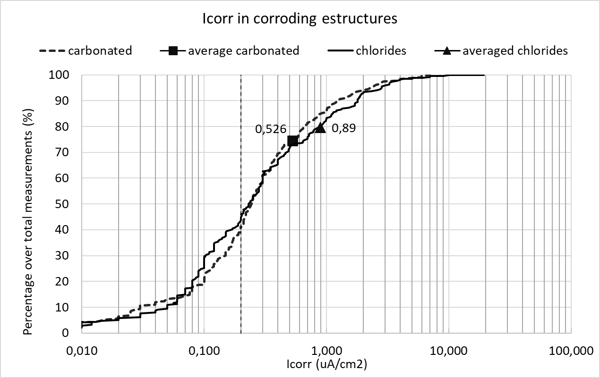
Fig. 23.9 Statistical distributions of corrosion rate values in corroding structures, either carbonated or chloride contaminated [23.41].#
\(X\) |
designation |
unit |
mean |
CoV (%) |
Distribution |
|---|---|---|---|---|---|
carbonation |
\(V_{corr,m}\) |
µm/year |
6.1 |
177 |
LN |
chlorides |
\(V_{corr,m}\) |
µm/year |
10.3 |
221 |
LN |
All structures |
\(V_{corr,m}\) |
µm/year |
7.3 |
226 |
LN |
For the interpretation of the representation, it has to be taken into account that:
The values were collected in the inspections made to assess the condition of the structure without any previous classification. Then, the cases do not represent all the population of structures, but only a part with visual signs of corrosion.
Measurements were made in each structure on the same or consecutive days, that is, with almost the same external environmental conditions.
In each structure, the selection of measurement zones was made by choosing only one zone where corrosion is likely not yet produced and several zones where the corrosion was evident. Then, the number of places measured with no corrosion are smaller than those corroding.
Because the selection in each structure was made to have corroding and non-corroding zones, the values in each structure represent a kind of spatial variation of the corrosion rate not only of the material, but also of different exposure classes (humidity and contamination).
In Fig. 23.9 it is underlined in vertical with a dashed line the limit of 0.1 µA/cm\(^2\) which could be taken as the frontier between active and negligible corrosion. This values for this limit indicate that around 20% of the zones measured in the corroding structures visited have shown negligible corrosion. Also can be deduced that either the mean value and the CoV are higher in the case of structures contaminated by chlorides. The coefficient of variation is high because in the same structure may coexist non-corroding zones and other with high corrosion rates. The probability of finding values of corrosion rates above 10 µA/cm\(^2\) is lower than the 0.35% and values above 5 µA/cm\(^2\) smaller than the 1.5%.
23.3.3.4. Values of \(V_{corr}\) in function of the exposure classes in EN 1992-1-1#
A set of values were proposed in the Contecvet Manual [23.5], for each exposure class indicated in the standard EN 1992-1-1. Very similar values were adopted by the DuraCrete project [23.36] that additionally statistically characterized them. The values also are mentioned in the Annex A of the fib Bulletin 119 [23.37] and given in the fib Bulletin 112 [23.25]. They were also the basis for calculating the cover depths of the chapter 6 of EN 1992-1-1 and explained in its Background Document [23.42]. They are as well in the Annex 12 on Service life calculation of the Spanish Code from 2008.
The values are based in a database [23.43] from laboratory specimens held in chambers with controlled RH and Temperature and, on the other hand, on data recorded on real outdoors structures. These updated values used for the calibration of the cover depths included in the EN 1992-1-1 [23.44] are given in Table 23.10.
Exposure class |
Mean \(V_{corr}\) (µm/year) |
CoV (%) |
Type of distribution |
|
|---|---|---|---|---|
0 |
No risk of corrosion, very dry |
0 |
- |
Deterministic |
XC1 |
Dry or permanent wet |
1 |
65 |
LN |
XC2 |
Wet rarely dry |
4 |
65 |
LN |
XC3 |
Moderate humidity |
2 |
65 |
LN |
XC4 |
Cyclic wet dry |
5 |
90 |
LN |
XD1 |
Moderate humidity |
4 |
60 |
LN |
XD2 |
Wet, rarely dry |
30 |
90 |
LN |
XD3 |
Cyclic, wet and dry |
30 |
60 |
LN |
XS1 |
Airborne salt conditions |
30 |
60 |
LN |
XS2 |
Submerged |
10 |
60 |
LN |
XS3 |
Tidal, splash and spray zones |
70 |
90 |
LN |
23.3.4. Corrosion limit states#
The \(P_{corr}\) limiting value of a structure can be directly associated to one of the following Corrosion Limit States (see Condition/Deterioration Limit States in the introduction) (ISO 2394 [23.45], ISO 13823 [23.2]) represented in Fig. 23.10. The need to define corrosion limit states was introduced by the DuraCrete project [23.36]:
Depassivation of reinforcing steel and onset of corrosion
Initiation of deterioration, e.g., development of a micro crack (< 0.05 mm wide) parallel to the bar on the concrete surface; corrosion penetration exceeds 50 μm (homogeneous corrosion) or 500 μm (pitting corrosion)
Cracking when the limit is a crack width
Spalling when the limit is the detachment of the concrete cover
Bond loss, when the loss in diameter is related to the loss in bond

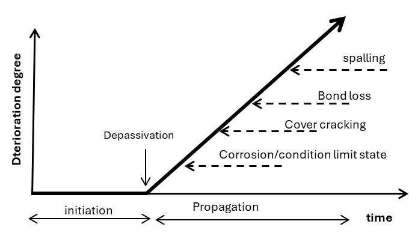
Fig. 23.10 Limit states associated to reinforcement corrosion (adapted from DuraCrete [23.36]).#
23.3.4.1. Condition (corrosion) limit state, CLS#
This is a new limit state implicitly incorporated into the calculation of the cover depths of chapter 6 in the EN 1992-1-1 [23.44] and introduced in MC2020 [23.39]. It is based in that since the depassivation moment is very difficult to be on site detected, unless monitoring is installed, the CLS considers that the limit state is when a certain corrosion has been produced that is not inducing a crack width higher than 0.1 mm in the cover depth. This propagation time is incorporated into the design service life. It has been associated to a \(P_{corr}\) of 50 µm in the case of uniform corrosion (carbonation) and of 500 µm for pitting attack (chlorides) (Fig. 23.11).

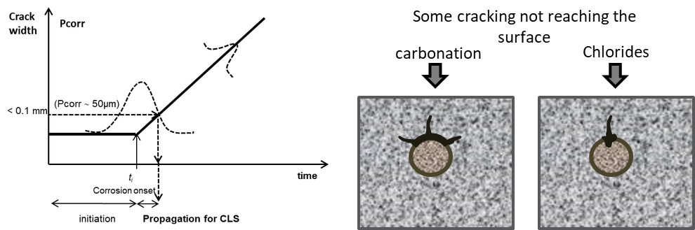
Fig. 23.11 Concept of Condition (Corrosion) Limit State introduced implicitly in EN 1992-1-1 [23.44] and described in MC2020 [23.39].#
Then, assuming a design service life value, the limit state function (LSF) may be formulated in the time domain as:
Then the requirement with respect to this limit state is given by:
where:
\(P\{\}\) is probability of reaching depassivation plus a propagation to attain a specified corrosion penetration value
\(t_{SL}\) is design service life [years],
\(t_{ini}\) is initiation period [years],
\(t_{prop}\) is propagation period [years]
\(P_{target,cls}\) is target failure probability for the limit state, depending on the direct or later consequences, including envisaged inspection options
As limit for the start of cracking usually values of \(P_{corr}\) of 50 µm in the case of uniform corrosion (carbonation) and of 500 µm for pitting attack (chlorides) are used as stated before.
23.3.4.2. Corrosion induced cracking or spalling limit states#
The limit state for corrosion-induced cracking will depend on the \(P_{corr}\) associated to each of the limiting value associated to these damages. Generically it can be expressed in terms of the cracking stage. The same format as in (23.39) can be used. The difference is that \(P_{corr}\) now corresponds to the attainment of a specified undesired crack width or spalling situation.
23.3.5. Example of calculation of the propagation periods of the corrosion limit state#
For the calculation of the design value of the propagation period associated to the Corrosion Limit State (\(P_{corr}\) = 50 µm for uniform corrosion or \(P_{pit}\) = 500 µm for pitting) we may use the expressions in prEN 1990-2:2026 [23.46].
For CoV < 20-25% and N distribution:
For CoV > 20-25% and LN distribution:
where:
\(\alpha\) FORM sensitivity factor for the \(V_{corr}\)
\(\beta\) the target reliability index
CoV the coefficient of variation
Table 23.11 shows the sensitivity factors of (23.41) and (23.42) calculated for the limit state of Corrosion (CLS) by Izquierdo [23.47].
Exposures |
Sensitivity factor |
|---|---|
XC1, XC2, XC3, XC4, XS1, XD1 |
-0.7 |
XS2, XS3, XD2, XD3 |
-0.3 |
Adopting this last possibility (Tanner et al. [23.48], Lara et al. [23.49]) Table 23.12 shows the results of the propagation periods calculated through expression (23.41) and (23.42) for variables with CV > 20% as is the case of the corrosion rate. The target value \(\beta\) = 1.5 is often used in the case of a not very aggressive environment.
Exposure and \(P_{corr}\) limit |
\(\alpha\) |
\(\beta\) |
CV |
\(V_{corr,m}\) |
\(t_{p,m}\) |
\(V_{corr,d}\) (23.41) |
\(t_{p,d}\) (23.41) |
\(V_{corr,d}\) (23.42) |
\(t_{p,d}\) (23.42) |
|---|---|---|---|---|---|---|---|---|---|
XC1 – 50 µm |
-0.7 |
1.5 |
0.65 |
1 |
50.00 |
1.98 |
25 |
1.56 |
32 |
XC2 – 50 µm |
-0.3 |
1.5 |
0.65 |
4 |
12.50 |
5.36 |
9 |
4.38 |
11 |
XC3 – 50 µm |
-0.7 |
1.5 |
0.65 |
2 |
25.00 |
3.96 |
32 |
3.13 |
16 |
XC4 – 50 µm |
-0.7 |
1.5 |
0.9 |
5 |
10.00 |
12.86 |
2 |
8.34 |
6 |
XS1 – 500 µm |
-0.7 |
1.5 |
0.6 |
30 |
- |
56.33* |
- |
46.0* |
1 |
XS2 – 500 µm |
-0.3 |
1.5 |
0.6 |
10 |
5.00 |
13.10* |
4 |
11.0* |
5 |
XS3 – 500 µm |
-0.3 |
1.5 |
0.9 |
70 |
- |
104.95* |
- |
73.6* |
- |
XD1 – 500 µm |
-0.7 |
1.5 |
0.6 |
4 |
12.50 |
7.51* |
7 |
6.1* |
8 |
XD2 – 500 µm |
-0.3 |
1.5 |
0.9 |
30 |
1.67 |
44.98* |
1 |
31.5* |
2 |
XD3 – 500 µm |
-0.3 |
1.5 |
0.6 |
30 |
1.67 |
39.30* |
1 |
33.0* |
2 |
* these values are multiplied by the pitting factor \(\alpha\) = 10
The expression (23.42) gives longer \(t_{p,d}\) values than expression (23.41). The \(t_{p,d}/t_{p,m}\) ratios with expression (23.42) result around 1.5-1.6 times, a safety factor of the order of the calculated by Izquierdo [23.47] by means of a full probabilistic calculation, for the cases of carbonated concrete or chloride atmospheric exposures. It seems more reasonable the use of expression (23.42) for the corrosion rate variable, because it evolves with variations in log scales with CV’s higher than 20%.
Regarding the \(t_{p,d}\) values, they result short of being practical in the exposures XS1, XS2, XD2 and XD3 even if \(t_{p,m}\) values are used and therefore, in these exposure conditions it seems better to use the limit state of depassivation by selecting a chloride threshold value not too conservative.
References
ISO. ISO 2394:2015. General principles on reliability for structures. 2015.
ISO. ISO 13823:2008. General principles on the design of structures for durability. 2008.
fib. fib Model Code for Concrete Structures 2010. Fédération Internationale du Béton, Lausanne, Switzerland, 2012.
J. Visser. Model Codes 2020: assessment of the state-of-the-art of the codes with respect to durability design. Carbonation. Technical Report, TNO, 2018. TNO-Report 006.32074.
CONTECVET. A validated user's manual for assessing the residual life of concrete structures. Technical Report, DG Enterprise, CEC, 2001. URL: https://www.ietcc.csic.es/wp-content/uploads/1989/02/manual_contecvet_ingles.pdf.
DuraCrete. Final Technical Report. General Guidelines for Durability Design and Redesign. Document BE95-1347/R17. Technical Report, The European Union – Brite EuRam III, 2000.
K. Tuutti. Corrosion of steel in concrete. Technical Report, Swedish Cement and Concrete Research Institute, Stockholm, 1982. Report CBI fo 4.82.
C. Andrade and N. Rebolledo. Generic modelling of propagation of reinforced concrete damage. In Proceedings of the fib Symposium 2017. Maastricht, The Netherlands, 2017.
H. F. W. Taylor. Cement Chemistry. Thomas Telford, London, 2nd edition, 1997.
P. Schiessl. New approach to durability design: An example for carbonation induced corrosion. Technical Report, CEB, Lausanne, 1997. CEB Bulletin d'Information No. 238.
LIFECON. LIFECON Deliverable D 3.2: Service Life Models. Technical Report, European Community: Fifth Framework Program, 2003.
fib. Model Code for Service Life Design. fib Bulletin 34. Technical Report, Fédération Internationale du Béton, Lausanne, Switzerland, 2006.
DuraCrete. Compliance Testing for Probabilistic Design Purposes. Document BE95-1347/R8. Technical Report, The European Union – Brite EuRam III, 1999.
M. Maage, S. Helland, E. Poulsen, Ø. Vennesland, and J. E. Carlsen. Service life prediction of existing concrete structures exposed to marine environment. ACI Materials Journal, 93(6):602–608, 1996.
P. B. Bamforth, W. F. Price, and M. Emerson. An International Review of Chloride Ingress into Structural Concrete. Technical Report, Transport Research Laboratory, Crowthorne, Berkshire, 1997. Report No. 1303/96/9092.
W. J. McCarter, B. T. Linfoot, T. M. Chrisp, and G. Starrs. Performance of concrete in XS1, XS2 and XS3 environments. Magazine of Concrete Research, 60(4):261–270, 2008.
S.-W. Pack, M.-S. Jung, H.-W. Song, S.-H. Kim, and K. Y. Ann. Prediction of time dependent chloride transport in concrete structures exposed to a marine environment. Cement and Concrete Research, 40:302–312, 2010.
DuraCrete. Statistical Quantification of the Variables in the Limit State Functions. Document BE95-1347/R9. Technical Report, The European Union – Brite EuRam III, 2000.
A. Lindvall. Environmental actions on concrete exposed in marine and road environments and its response – Consequences for the initiation of chloride-induced reinforcement corrosion. Technical Report, Department of Building Technology, Chalmers University of Technology, Göteborg, 2003. Publication P-03:2.
R. B. Polder and M. R. de Rooij. Durability of marine concrete structures – field investigations and modelling. HERON, 50(3):133–153, 2005.
D. A. Hausmann. A probability model for steel corrosion in concrete. Materials Performance, 37(10):64–68, 1996.
W. Breit and P. Schießl. Critical chloride content. In International Workshop on Chloride Penetration into Concrete, 441. St. Rémy, France, 1995.
G. Markeset. Critical chloride content and its influence on service life predictions. Materials and Corrosion, 60(8):593–596, 2009.
D. Izquierdo, C. Alonso, C. Andrade, and M. Castellote. Potentiostatic determination of chloride threshold values for rebar depassivation. Experimental and statistical study. Electrochimica Acta, 49:2731–2739, 2004.
fib. fib MC(2020) complementary guidance on concrete durability. fib Bulletin 112, Technical Report. Technical Report, Fédération Internationale du Béton, Lausanne, Switzerland, 2024.
C. L. Page and K. W. J. Treadaway. Aspects of the electrochemistry of steel in concrete. Nature, 297(5862):109–115, 1982.
C. Andrade, C. Alonso, and F. J. Molina. Cover cracking as a function of rebar corrosion: Part I – Experimental test. Materials and Structures, 26:453–464, 1993.
F. J. Molina, C. Andrade, and C. Alonso. Cover cracking as a function of bar corrosion: Part II – Numerical model. Materials and Structures, 26:532–548, 1993.
C. Andrade and J. A. González. Quantitative measurements of corrosion rate of reinforcing steels embedded in concrete using polarization resistance measurements. Werkstoffe und Korrosion, 29:515, 1978.
C. Andrade, C. Alonso, and J. Rodríguez. Remaining service life of corroding structures. In Proceedings IABSE Symposium on Durability, 359–363. Lisbon, 1989.
A. Valiente and M. Elices. Premature failure of prestressed steel bars. Engineering Failure Analysis, 5(3):219–227, 1998.
M. Elices, A. Valiente, L. Caballero, M. Iordachescu, J. Fullea, J. Sanchez-Montero, and V. Lopez-Serrano. Failure analysis of prestressed anchor bars. Engineering Failure Analysis, 24:57–66, 2012.
J. A. González and C. Andrade. Effect of carbonation, chlorides and relative ambient humidity on the corrosion of galvanized rebars embedded in concrete. British Corrosion Journal, 17(1):21–28, 1982.
C. Andrade, C. Alonso, and J. Sarría. Corrosion rate evolution in concrete structures exposed to the atmosphere. Cement and Concrete Composites, 24(1):55–64, 2002.
C. Andrade, N. Rebolledo, and F. Pedrosa. From the instantaneous corrosion rate to a representative value. In M. G. Alexander and others, editors, Proceedings of the Conference on Concrete Repair, Rehabilitation and Retrofitting III. London, 2012. Taylor and Francis Group.
DuraCrete. Statistical Quantification of the Propagation Period. Subtask 4.3.1, Report BE95-1347/TG4/E. Technical Report, The European Union – Brite EuRam III, 1998.
fib. Sensitivity analysis of the probabilistic service life models for carbonation- and chloride-initiated corrosion given in the fib Model Codes for Concrete Structures. fib Bulletin 119, Technical Report. Technical Report, Fédération Internationale du Béton, Lausanne, Switzerland, 2025.
J. A. González, C. Andrade, C. Alonso, and S. Feliu. Comparison of rates of general corrosion and maximum pitting penetration on concrete embedded steel reinforcement. Cement and Concrete Research, 25(2):257–264, 1995.
fib. fib Model Code for Concrete Structures 2020. Fédération Internationale du Béton, Lausanne, Switzerland, 2023.
J. Rodriguez, L. M. Ortega, A. M. Garcia, L. Johansson, and K. Petterson. On site corrosion rate measurements in concrete structures using a device developed under the EUREKA project EU-401. In Proceedings of the Conference “Concrete Across Borders”, 215–226. Odense, Denmark, 1994. Palladian Publications Ltd.
C. Andrade and D. Izquierdo. Statistical Treatments of Chloride Threshold and Corrosion Propagation Rate. Corrosion and Materials Degradation, 3(4):598–611, 2022. doi:10.3390/cmd3040032.
C. Andrade and D. Izquierdo. Durability and Cover Depth Provisions in Next Eurocode 2. Background Modelling and Calculations. Hormigón y Acero, 74(299-300):19–40, 2023. doi:10.33586/hya.2023.3102.
J. Rodriguez, L. M. Ortega, and M. Garcia. Corrosion rate measurement in concrete structures by means of a device developed under the Eureka Project EU-401 (in Spanish). Hormigón y Acero, pages 79–91, 1993.
CEN. EN 1992-1-1:2023. Eurocode 2: Design of concrete structures – Part 1-1: General rules and rules for buildings. 2023.
ISO. ISO 2394:1998. General principles on reliability for structures. 1998.
CEN. EN 1990-2:2026. Eurocode – Basis of structural and geotechnical design – Part 2: Assessment of existing structures. 2026.
D. Izquierdo. Design basis for a probabilistic treatment of the corrosion processes of the reinforcement in concrete. PhD thesis, Polytechnic University of Madrid, 2003.
P. Tanner, C. Lara, and M. Prieto. Semi-probabilistic models for the assessment of existing concrete structures. In Applications of Statistics and Probability in Civil Engineering, 309. 2011.
C. Lara, P. Tanner, C. Zanuy, and R. Hingorani. Reliability verification of existing RC structures using partial factors approaches and site-specific data. Applied Sciences, 11(4):1653, 2021.
W. Breit. Kritischer korrosionsauslösender Chloridgehalt – Sachstand und neuere Untersuchungen. Verein Deutscher Zementwerke e.V., Verlag Bau+Technik, Düsseldorf, Germany, 2001.
J. Rodriguez, L. M. Ortega, and J. Casal. Load carrying capacity of concrete structures with corroded reinforcement. Construction and Building Materials, 11(4):239–248, 1997.